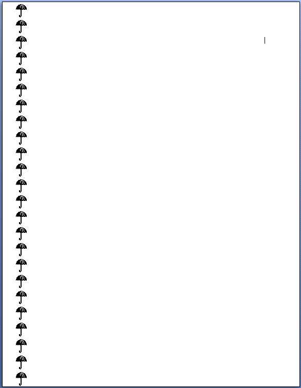

[Table of Contents] [docx version]
WordprocessingML Reference Material - Table of Contents
right (Right Border)
This element specifies the presentation and display of the page border displayed at the right of each page in this section.
[Example: Consider a section in which all pages shall have a right border consisting of a repeated image of an umbrella, like this:

This border would result in the following WordprocessingML:
<w:sectPr>
…
<w:pgBorders>
<w:right w:val="seattle" …/>
</w:pgBorders>
…
</w:sectPr>
Because the page has a border at the right only, only the right element is specified within the set of page borders. end example]
When a document has a right border that is relative to the page edges (using the offsetFrom attribute value of page on pgBorders), it shall span the right edge of the page at the location defined by its properties, stopping when:
• It intersects with the corresponding top or bottom page border (if one is specified)
• It reaches the edge of the page.
[Example: In the example above, no top or bottom border was specified in the WordprocessingML, so a consumer shall draw the border from one edge of the page to the other. end example]
When a document has a right border that is relative to the text (using the offsetFrom attribute value of text on pgBorders), it shall only span the necessary width to satisfy the requirement of spanning the width of the text.
|
Parent Elements |
|
pgBorders (§2.6.10) |
|
Attributes |
Description |
|
color (Border Color) |
Specifies the color for this border.
This color may either be presented as a hex value (in RRGGBB format), or auto to allow a consumer to automatically determine the border color as appropriate.
[Example: Consider a border color with value auto, as follows:
This color therefore may be automatically be modified by a consumer as appropriate, for example, in order to ensure that the border can be distinguished against the page's background color. end example]
If the border style (the val attribute) specifies the use of an art border, this attribute is ignored. As well, if the border specifies the use of a theme color via the themeColor attribute, this value is superseded by the theme color value.
The possible values for this attribute are defined by the ST_HexColor simple type (§2.18.43). |
|
frame (Create Frame Effect) |
Specifies whether the specified border should be modified to create a frame effect by reversing the border's appearance from the edge nearest the text to the edge furthest from the text.
If this attribute is omitted, then the border is not given any frame effect.
[Example: Consider a bottom border which shall appear with a frame effect, which is specified in the following WordprocessingML:
<w:bottom w:frame="true" ... />
This frame's val is true, indicating that the border frame effect shall be applied. end example]
The possible values for this attribute are defined by the ST_OnOff simple type (§2.18.67). |
|
shadow (Border Shadow) |
Specifies whether this border should be modified to create the appearance of a shadow.
For the right and bottom borders, this is accomplished by duplicating the border below and right of the normal border location. For the right and top borders, this is accomplished by moving the order down and to the right of its original location.
If this attribute is omitted, then the border is not given the shadow effect.
[Example: Consider a top border which shall appear with a shadow effect, resulting in the following WordprocessingML:
<w:bottom w:shadow="true" ... />
This frame's val is true, indicating that the shadow effect shall be applied to the border. end example]
The possible values for this attribute are defined by the ST_OnOff simple type (§2.18.67). |
|
space (Border Spacing Measurement) |
Specifies the spacing offset that shall be used to place this border on the parent object.
When a document has a page border that is relative to the page edges (using a value of page in the offsetFrom attribute on pgBorders (§2.6.10)), it shall specify the distance between the edge of the page and the beginning of this border in points.
When a document has a page border that is relative to the text extents (using a value of text in the offsetFrom attribute on pgBorders (§2.6.10)), or any other border type, it shall specify the distance between the edge of the object and the beginning of this border in points.
[Example: Consider a document with a set of page borders all specified to appear 24 points from the edge of the page. The resulting WordprocessingML would be as follows:
<w:pgBorders w:offsetFrom="page"> <w:bottom … w:space="24/> </w:pgBorders
The offsetFrom attribute specifies that the space value will provide the offset of the page border from the page edge, and the value of the space attribute specifies that the page offset shall be 24 points. end example]
The possible values for this attribute are defined by the ST_PointMeasure simple type (§2.18.75). |
|
sz (Border Width) |
Specifies the width of the current border.
If the border style (val attribute) specifies a line border, the width of this border is specified in measurements of eighths of a point, with a minimum value of two (one-fourth of a point) and a maximum value of 96 (twelve points). Any values outside this range may be reassigned to a more appropriate value.
If the border style (val attribute) specifies an art border, the width of this border is specified in measurements of points, with a minimum value of one and a maximum value of 31. Any values outside this range may be reassigned to a more appropriate value.
[Example: Consider a document with a three point wide dashed line border on all sides, resulting in the following WordprocessingML markup:
<w:top w:val="dashed" w:sz="24" …/> <w:left w:val="dashed" w:sz="24" …/> <w:bottom w:val="dashed" w:sz="24" …/> <w:right w:val="dashed" w:sz="24" …/>
The border style is specified using the val attribute, and because that border style is a line border (dashed), the sz attribute specifies the size in eighths of a point (24 eighths of a point = 3 points). end example]
The possible values for this attribute are defined by the ST_EighthPointMeasure simple type (§2.18.27). |
|
themeColor (Border Theme Color) |
Specifies a theme color to be applied to the current border.
The specified theme color is a reference to one of the predefined theme colors, located in the document's Theme part,which allows color information to be set centrally in the document.
[Example: Consider a set of borders configured to use the accent2 theme color, resulting in the following WordprocessingML markup:
<w:top … w:color="FFA8A0" w:themeColor="accent2" w:themeTint="99" /> The borders have a color with an RGB value of FFA8A0, however, because the themeColor attribute is specified, that value is ignored in favor of the accent2 theme color specified for this document. end example]
The possible values for this attribute are defined by the ST_ThemeColor simple type (§2.18.104). |
|
themeShade (Border Theme Color Shade) |
Specifies the shade value applied to the supplied theme color (if any) for this border instance.
If the themeShade is supplied, then it is applied to the RGB value of the theme color (from the theme part) to determine the final color applied to this border.
The themeShade value is stored as a hex encoding of the shade value (from 0–255) applied to the current border.
[Example: Consider a shade of 40% applied to a border in a document. This shade is calculated as follows:
The resulting themeShade value in the file format would be 66. end example]
Given an RGB color defined as three hex values in RRGGBB format, the shade is applied as follows: • Convert the color to the HSL color format (values from 0 to 1) • Modify the luminance factor as follows:
• Convert the resultant HSL color to RGB
[Example: Consider a document with a background using the accent2 theme color, whose RGB value (in RRGGBB hex format) is C0504D.
The equivalent HSL color value would be.
Applying the shade formula with a shade percentage of 75% to the luminance, we get:
Taking the resulting HSL color value of and converting back to RGB, we get 943634.
This transformed value can be seen in the resulting background's color attribute:
<w:top w:val="single" w:sz="4" w:space="24"
end example]
The possible values for this attribute are defined by the ST_UcharHexNumber simple type (§2.18.106). |
|
themeTint (Border Theme Color Tint) |
Specifies the tint value applied to the supplied theme color (if any) for this border instance.
If the themeTint is supplied, then it is applied to the RGB value of the theme color (from the theme part) to determine the final color applied to this border.
The themeTint value is stored as a hex encoding of the tint value (from 0–255) applied to the current border.
[Example: Consider a tint of 60% applied to a border in a document. This tint is calculated as follows:
The resulting themeTint value in the file format would be 99. end example]
Given an RGB color defined as three hex values in RRGGBB format, the shade is applied as follows: • Convert the color to the HSL color format (values from 0 to 1) • Modify the luminance factor as follows:
• Convert the resultant HSL color to RGB
[Example: Consider a document with a background using the accent2 theme color, whose RGB value (in RRGGBB hex format) is 4F81BD.
The equivalent HSL color value would be.
Applying the tint formula with a tint percentage of 60% to the luminance, we get:
Taking the resulting HSL color value of and converting back to RGB, we get 95B3D7.
This transformed value can be seen in the resulting background's color attribute:
<w:top w:val="single" w:sz="4" w:space="24"
end example]
The possible values for this attribute are defined by the ST_UcharHexNumber simple type (§2.18.106). |
|
val (Border Style) |
Specifies the style of border used on this object.
This border can either be an art border (a repeated image along the borders - only valid for page borders) or a line border (a line format repeated along the borders) - see the simple type definition for a description of each border style.
[Example: Consider a left border resulting in the following WordprocessingML:
<w:left w:val="single" …/>
This border's val is single, indicating that the border style is a single line. end example]
The possible values for this attribute are defined by the ST_Border simple type (§2.18.4). |
The following XML Schema fragment defines the contents of this element:
<complexType name="CT_Border">
<attribute name="val" type="ST_Border" use="required"/>
<attribute name="color" type="ST_HexColor" use="optional"/>
<attribute name="themeColor" type="ST_ThemeColor" use="optional"/>
<attribute name="themeTint" type="ST_UcharHexNumber" use="optional"/>
<attribute name="themeShade" type="ST_UcharHexNumber" use="optional"/>
<attribute name="sz" type="ST_EighthPointMeasure" use="optional"/>
<attribute name="space" type="ST_PointMeasure" use="optional"/>
<attribute name="shadow" type="ST_OnOff" use="optional"/>
<attribute name="frame" type="ST_OnOff" use="optional"/>
</complexType>